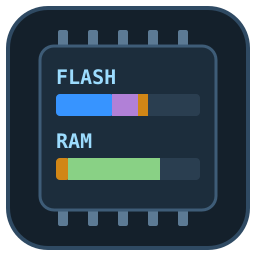
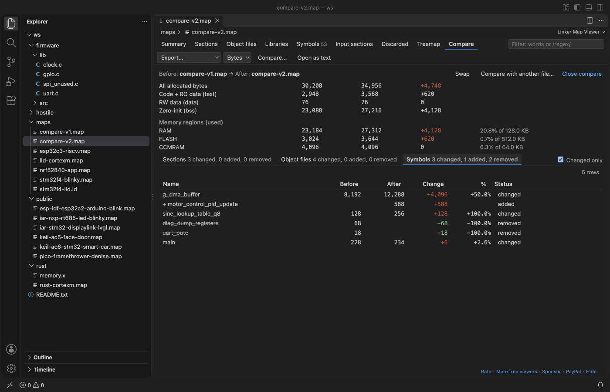

Linker Map Viewer & Map File Analyzer (GNU ld, Memory Usage)
Linker Map Viewer & Map File Analyzer (GNU ld, Memory Usage), a VS Code extension by Zovo
See where your FLASH and RAM go. Click a .map file from GNU ld, LLVM lld, IAR or Keil and get memory region bars, sortable tables of sections, object files and symbols, a treemap, and a compare of two builds. Free, no sign-in, works offline.
Free, MIT license. Needs VS Code 1.90.0 or newer. Extension ID zovo.zovo-linker-map-viewer, version 0.2.1.

Questions people ask
Is Linker Map Viewer & Map File Analyzer (GNU ld, Memory Usage) free?
Yes. Linker Map Viewer & Map File Analyzer (GNU ld, Memory Usage) is free and MIT licensed.
How do I install Linker Map Viewer & Map File Analyzer (GNU ld, Memory Usage)?
Click "Install in VS Code" above, or search for zovo.zovo-linker-map-viewer in the Extensions view.
What you get
- Memory regions from the
Memory Configurationtable, each with a used/total bar split into code, read-only data, initialized data and zero-init data. The numbers equalld --print-memory-usage, and a region over its size turns red. - Tables of output sections, object files, libraries (
.aarchives), symbols, input sections and discarded sections. Sort by any column, filter with words or a/regex/, and scroll through a million rows. - Click an object file to see its sections and why the linker pulled it in ("main.o needs uart_init"). Click a symbol to see its address, size, section and, with
--cref, which files use it. - Double-click a symbol or object file to open its source file in the workspace at the definition (
uart.oanduart.c.objfinduart.c). - A treemap of region, section, library and object file sizes. Click a box to go in.
- Compare with the map of an older build: the change of every region, section, object file and symbol, biggest first. Export as CSV or Markdown for a pull request.
- Sizes in bytes, KB or hex. Dark and light themes follow VS Code.

Formats
| Linker | Typical source | What the viewer reads |
|---|---|---|
| GNU ld | gcc, arm-none-eabi-gcc, ESP-IDF, Zephyr, Raspberry Pi Pico SDK, STM32CubeIDE, avr-gcc, RISC-V | memory regions, sections, input sections, symbols, discarded sections, archive reasons, cross references |
| LLVM lld | clang, Rust embedded | sections, input sections, symbols with sizes; regions from memory.x or a *.ld script next to the map |
| IAR ILINK (7.x, 8.x) | IAR Embedded Workbench | placement blocks and ranges, sections, entry list |
| Arm Compiler armlink (5, 6) | Keil MDK | execution and load regions, sections, symbol table, removed sections, "Grand Totals" |
The format is found from the file's first lines. A .js.map or .css.map source map stays a JSON text file. Any other JSON file that ends in .map goes back to the text editor with a short message.
Make your linker write a map
# GCC / arm-none-eabi-gcc / clang (add --cref for the "used by" list)
arm-none-eabi-gcc ... -Wl,-Map=firmware.map,--cref
# CMake
target_link_options(app PRIVATE -Wl,-Map=firmware.map)
# Rust (cortex-m)
RUSTFLAGS="-C link-arg=-Map=firmware.map" cargo build --releaseIAR: --map firmware.map. Keil: --map --list=firmware.map. ESP-IDF, Zephyr, the Pico SDK and PlatformIO already write one into the build folder.
Large maps
The file is read in 4 MB chunks in a background thread, never as a whole into VS Code or the view. In our test, a 206 MB GNU ld map with 1.1 million symbols showed its first progress in under a second and its full summary in 3 to 5 seconds. The editor keeps working while it reads. Only the rows on screen are sent to the view.
Compare two builds

Click "Compare..." in the toolbar and pick the older map, or select two .map files in the Explorer and pick "Compare Linker Maps". "Changed only" hides the rest, and "Swap" turns before and after around.
Why this one
These are problems reported on other map file extensions. Each one is checked by a test in this repo:
| Report | What Linker Map Viewer does |
|---|---|
| An IAR 9.60 map does not open (open since 2026-06-19) | Reads IAR ILINK maps. Tested on two public IAR 7.50 and 8.40 maps: the ROM region totals equal IAR's own "bytes of readonly code/data memory" lines. |
| The "Cross Reference Table" heading is not recognized (open since 2025-02-15) | Reads the cross reference table from --cref. Each symbol's details list the files that use it. |
| Discarded input sections counted in memory regions (fixed there in 2026) | Discarded sections get their own tab and are never counted in a region. On the test maps every region total equals ld --print-memory-usage. |
Section names without a leading dot, or with $$, merged into the previous section (fixed there in 2026) | ram_noinit and __ram_noinit$$ are sections of their own, with the right sizes. |
| No build for the Open VSX registry (open since 2021-07-25) | Plain JavaScript with no native code, and engines.vscode ^1.90.0, so VSCodium, Cursor and Windsurf can install it. |
One more check: with .data : AT(addr) placement, ld --print-memory-usage leaves the .data load copy out of FLASH. Linker Map Viewer counts it (nRF52 test map: 2,500 bytes, the same as size text + data plus 1 alignment byte).
Settings
| Setting | Default | What it does |
|---|---|---|
linkerMap.sizeFormat | bytes | Sizes as bytes, KB or hex when a map opens |
linkerMap.warnAbovePercent | 90 | A region bar turns to the warning color above this percentage |
linkerMap.readLinkerScript | true | For maps without regions (lld, Rust), read the MEMORY block of a nearby linker script |
linkerMap.memoryRegions | [] | Regions to use for such maps, for example [{"name": "FLASH", "origin": "0x08000000", "length": "512K"}] |
linkerMap.maxRemoteMB | 512 | Largest map read from a remote or virtual file system |
linkerMap.askForRating | true | One rating question after a few days of use |
linkerMap.showSupportLinks | true | The small Rate, More free viewers and Sponsor links |
Privacy
No network requests, no telemetry, no account. The view has a strict content security policy (default-src 'none'). The map is read on your machine and nothing leaves it.
Notes
- GNU ld maps list global symbols without sizes. A size marked
~runs from the symbol to the next symbol in the same input section (exact with-ffunction-sections -fdata-sections). Static symbols are not in GNU ld maps. - IAR splits a few bytes between "code" and "read-only data" its own way, so those two lines can differ from IAR's summary by a few bytes. Their sum matches.
License
MIT
Guides
- Analyze a linker map file in VS Code
- Compare two linker map files and see what grew
- Find why a library object was linked into your firmware
- Linker Map Viewer Online, free in your browser with no upload
Install Linker Map Viewer & Map File Analyzer (GNU ld, Memory Usage)
Click the button to open VS Code and install it, or press Ctrl+P (Cmd+P on macOS) in VS Code and run ext install zovo.zovo-linker-map-viewer.
Free, MIT license. Needs VS Code 1.90.0 or newer. Extension ID zovo.zovo-linker-map-viewer, version 0.2.1.
Source code and issues are on GitHub.
Support this work
If this extension saves you time, you can support the work on GitHub Sponsors. Monthly tiers start at $5, and one-time tiers start at $15. Sponsorship is optional, and the tool works the same without it.
Need your format supported?
Open a format request with a sample file, and I reply there whether it can be done. For USD 299 once, through this GitHub Sponsors tier, I add your file format or a missing feature to this extension, with tests, within 7 days.